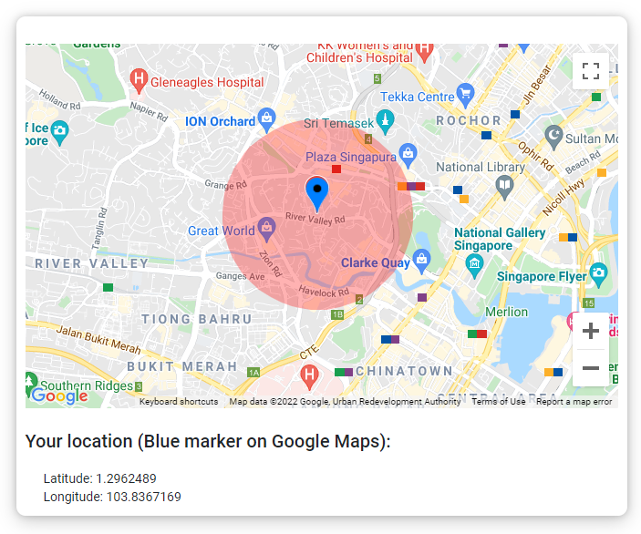
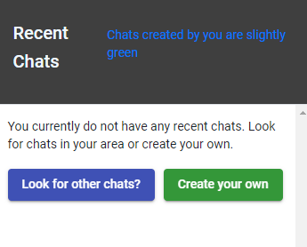

This website is an messaging app, just like whatsapp or messanger, but it also includes a special feature. When creating chats, your current location is saved and set as the center point of the chat. See example here

Any user who is within this radius can see the chat on their home screen and join it to talk about stuff. And example would be a MacDonald's chat. A user could join the chat and talk with the employees to see if they still have some Big Macs.
The hope for this website is also to connect people near each other though difficult times. People used to talk outside but now, with the current COVID-19 situation, our lifestyle has changed and we cannot communicate the same way... This website has the ability to imporve our lives a bit and reconnect people
How to use?
To look for chats near you, just click on the "Proxi" logo at the top right corner. This will redirect you home where you can click the update button to see chats near you.

If you want to create your own chats, click on the button located in the sidebar next to the 'Go home button'
You need to be registered to create your own chats and if you want special chats, please contact support. (contact us)
You can edit your user settings and resend confirmation emails using links you can find under 'My account' in the navbar
You can edit chats if you created them.
If you are the creator of chat and you want to edit some parameters, please go onto your chat and select the settings button.(Note: Only someone logged in with your email can see the button)
To finish off...
All of this code is available on Github. Two repositories. Backend | Frontend